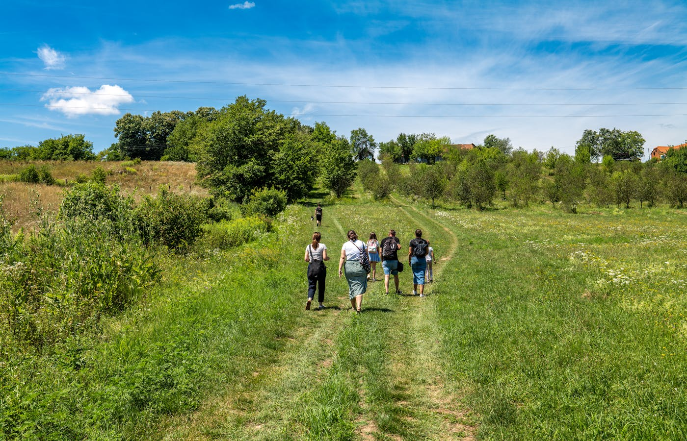

2025 · Innovación social · Web · Identidad visual · Cofundador
En Marcha
Una organización de innovación social para que la gente no tenga que irse de su pueblo para tener futuro. Mi rol: hacer que las instituciones confíen en que no estamos vendiendo humo.
Rol
Cofundador · Diseño · Web
Cofundador
Miguel Gatoó
Año
2025
Territorio
La Vera, Extremadura

El problema de credibilidad
Cada pocos años llega alguien a un pueblo rural con un programa de formación. Organiza talleres, saca fotos y se va. Nada cambia. Los pueblos han aprendido a desconfiar. El problema de En Marcha no era el contenido — era convencer a las instituciones de que esta vez era diferente, sin historial que lo respaldara.
La misión era concreta: que la gente no tenga que irse del pueblo para tener futuro. No como eslogan — como criterio de diseño. Cada decisión debía responder a esa pregunta: ¿esto hace más probable que alguien se quede?
Miguel Gatoó (OIT/Naciones Unidas) tenía el conocimiento y las relaciones institucionales. Yo tenía el diseño y la web. La pregunta era qué tenía que verse antes de que alguien cogiera el teléfono.
Lo que encontramos sobre el terreno
Hablamos con alcaldes, asociaciones locales y futuros participantes en La Vera. Los alcaldes ya sabían que sus vecinos necesitaban formación. El hallazgo real fue otro: los fondos europeos llegan con condiciones, plazos y requisitos de justificación que los Ayuntamientos pequeños no pueden gestionar solos. Necesitan un socio que navegue eso, no solo alguien que imparta talleres.
Perfil 1
Jóvenes que quieren quedarse
No ven futuro económico en el territorio. El problema no es formación — es que el mercado laboral local no existe.
Perfil 2
Mujeres en reincorporación
Vuelven al mercado laboral después de años cuidando familia. Necesitan actualización y confianza, no solo conocimientos.
Perfil 3
Trabajadores desplazados
Mayores, con automatización o paro. El reto es reconvertir sin que parezca que los estás enviando al paro con un diploma.
En los tres casos, el obstáculo no era el aprendizaje — era la confianza y el acceso. El contenido de los programas era secundario. Lo primero era demostrar que estábamos ahí para quedarnos.

División de trabajo y decisiones de diseño
La división fue deliberada: Miguel gestionó instituciones, financiación y programas. Yo me encargué de todo lo que las instituciones verían antes de decir que sí. En los contenidos curriculares trabajamos juntos — los programas tenían que sostenerse metodológicamente.
Decisión — Identidad visual
Sistema de color anclado en el paisaje de La Vera: bosque, oliva, ocre, tierra. No para ser decorativo — para señalar arraigo. Una ONG de ciudad no usa estos colores. Una organización del territorio, sí.
Decisión — Arquitectura web
La web está diseñada para un único visitante decisivo: el funcionario o político local que tiene que decidir si colaborar. La IA responde sus preguntas en orden: qué es esto, quién está detrás, qué han hecho, cómo trabajamos juntos.
Decisión — Lo que dejé fuera
Nada de lenguaje de startup. Nada de promesas de impacto sin evidencia. Nada de estética que gritara "proyecto de diseñador". En contextos institucionales, el diseño no tiene que impresionar — tiene que no dar ninguna razón para decir no.
Estado actual y lo que aprendí
Organización activa, web publicada en en-marcha-web.vercel.app y primeros contactos institucionales establecidos con Ayuntamientos de la comarca. El trabajo avanza despacio — así funciona esto. La confianza se construye en persona, no en una web.
La restricción más difícil no fue técnica ni de recursos — fue de tiempo. Las instituciones públicas toman decisiones lentamente por diseño. Diseñar para eso significa no esperar validación rápida, sino construir credibilidad que dure.
En proyectos de innovación social, el diseño no es el producto — es el argumento de que el producto existe. Sin credibilidad visual e institucional, el mejor contenido no llega a la primera reunión.